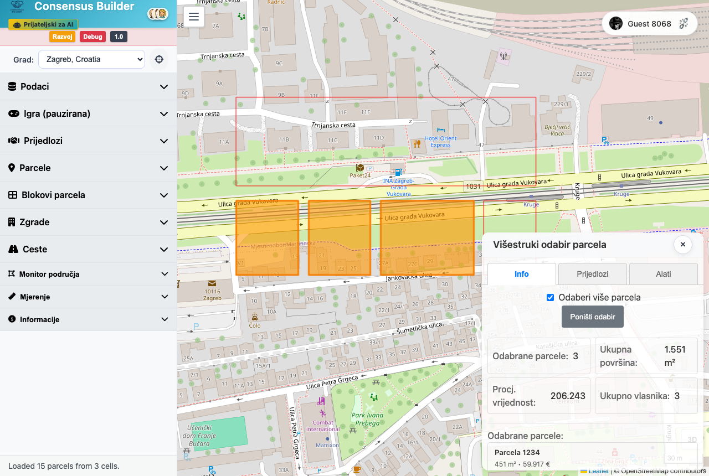
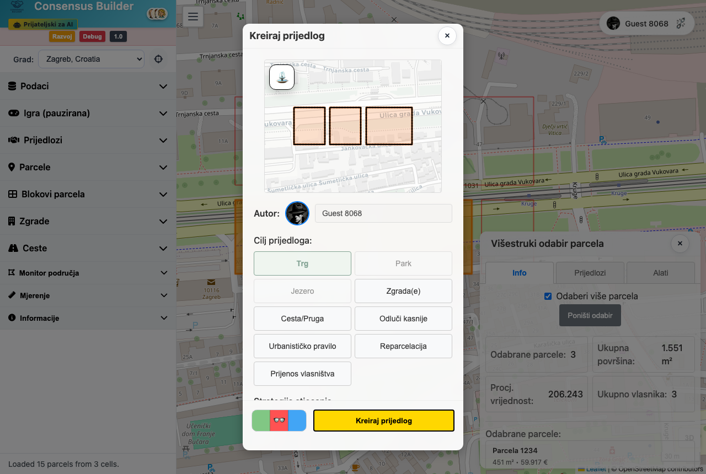
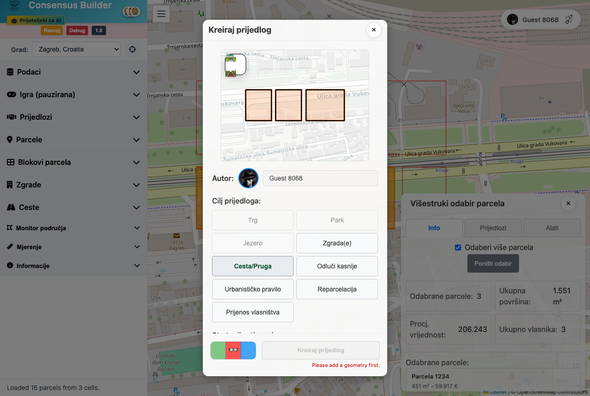
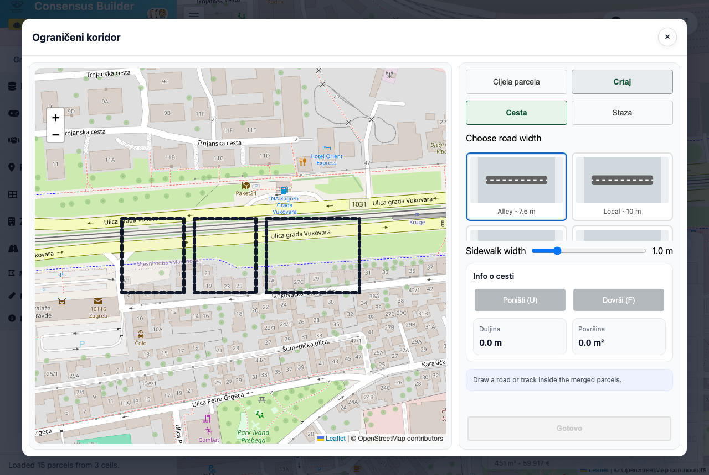

Prijedlog ceste ili pruge
Prijedlogom ceste/pruge crtaš koridor nove prometnice kroz parcele. Time se postojeće parcele presijecaju i nastaju novi blokovi parcela. Postupak ide kroz prozor Kreiraj prijedlog, a sam koridor crtaš u zasebnom prozoru Ograničeni koridor.
-
Odaberi parcele na karti
Na karti odaberi parcele kroz koje će ići cesta. Za koridor parcele moraju biti susjedne — ako nisu, sustav će javiti „Parcele moraju biti susjedne za crtanje ograničenog koridora.”

Snimka zaslona uskoroOdabir susjednih parcela na karti. -
Otvori prozor za izradu prijedloga
Klikni gumb Kreiraj prijedlog. Otvara se prozor naslova Kreiraj prijedlog u kojem je već prikazan tvoj autor (Autor:).

Snimka zaslona uskoroProzor „Kreiraj prijedlog”. -
Odaberi cilj: Cesta/Pruga
Pod Cilj prijedloga: klikni Cesta/Pruga. Sustav automatski postavlja način stjecanja na Preferirano djelomično stjecanje.

Snimka zaslona uskoroOdabir cilja „Cesta/Pruga”. -
Otvori uređivanje geometrije
Pojavljuje se odjeljak Geometrija sa statusom „Nema geometrije: definiraj geometriju”. Klikni Uredi da otvoriš prozor za crtanje koridora.
-
Prozor „Ograničeni koridor”
Otvara se prozor Ograničeni koridor s kartom i obrisom odabranih parcela. Na vrhu su dva prekidača:
Način: Cijela parcela ili Crtaj. Tip: Cesta ili Staza.
U načinu Cijela parcela koridor je cijeli obris odabranih parcela — ne moraš ništa crtati. Za precizniji koridor prebaci na Crtaj.
 Snimka zaslona uskoro
Snimka zaslona uskoro
Prozor „Ograničeni koridor” s prekidačima načina i tipa. -
Odaberi tip i (po želji) nacrtaj koridor
Odaberi Cesta ili Staza. Ako si u načinu Crtaj, pojavljuju se izbor širine i alati za crtanje:
Klikaj po karti da postaviš točke koridora, a zatim klikni Dovrši (F). Pogrešnu točku poništi s Poništi (U). Uživo se prikazuju Duljina i Površina.
U ovom prozoru neke su oznake još uvijek na engleskom: izbor širine (Choose road width / Choose track width) s gotovim širinama (Alley ~7.5 m, Local ~10 m, Collector ~18 m, Main street ~26 m, Avenue ~40 m, Boulevard ~80 m), širina nogostupa (Sidewalk width) i širina staze (Track width).
Snimka zaslona uskoroIzbor širine ceste i crtanje koridora na karti. -
Potvrdi geometriju
Klikni Gotovo. Koridor se sprema i vraćaš se u prozor Kreiraj prijedlog, gdje status sad pokazuje ✔️ geometrija predana.
-
Popuni preostala polja
Dodaj Opis: prijedloga i, po želji, Ponuda: (iznos). Pod Opcije: možeš prijedlog učiniti uvjetnim, dati mu rok isteka, opadanje ponude ili depozit. U Sažetak prijedloga vidiš pogođene parcele, površinu i vlasnike.
-
Pošalji prijedlog
Klikni Kreiraj prijedlog. Tijekom izrade gumb pokazuje Kreiram.... Gotovo — tvoj prijedlog ceste je stvoren.
 Snimka zaslona uskoro
Snimka zaslona uskoro
Stvoreni prijedlog ceste prikazan na karti.